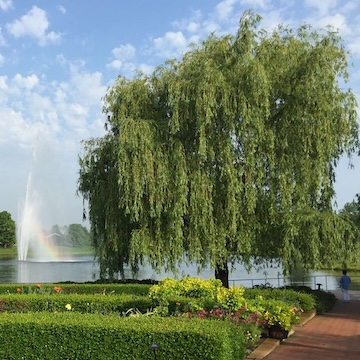

A willow tree is a type of tree known for its long, flexible branches and narrow leaves that often hang gracefully toward the ground. Willow trees commonly grow near rivers, ponds, and other sources of water because they thrive in moist soil. They are known for their fast growth, ability to adapt to different environments, and strong root systems that help prevent soil erosion. Willow trees are also symbols of resilience, flexibility, and strength because they can bend with the wind without easily breaking.
"Brown Eyes Turn Black, but the truth, I don't wanna be a rapper!"